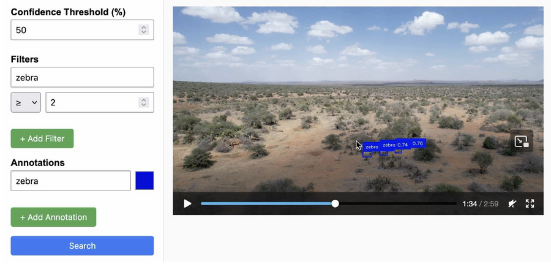

Chain Reaction: A new spotlight series where one rising researcher lights the path to the next. Follow the chain, meet the minds shaping the future of Imageomics.
At the forefront of Imageomics research, recent work by Dominik Winecki, PhD student at The Ohio State University’s College of Engineering and Computer Science, is exploring ways to advance how interactive data systems integrate with video technologies.
Winecki said he is pushing the boundaries by addressing the common “frustrations encountered when processing and annotating video data” within biological and ecological research, especially involving animals.
His current Imageomics research is something new within the field, targeting improvements of both interactive data systems and video processing. Historically, database processing methods and user interfaces haven’t significantly evolved to handle video data efficiently. His efforts aim to simplify video annotation and interaction tasks, reducing cumbersome software setups and ambiguous outcomes often experienced in traditional video-based analyses.
Central to this research is Winecki's work on VidFormer, a data-system tool developed to accelerate video annotation processes. The system introduces an API compatibility layer, enabling video annotation scripts to achieve nearly instantaneous visualizations with minimal coding changes. This layer leverages symbolic frame references to generate representation of video tasks, optimizing workloads seamlessly across multiple cores. Such technological advancements have shown a promising double or even triple speed increase in most annotation tasks.

Winecki also makes it clear that VidfFormer is not just some video editor, database, or vision library; rather a new infrastructure to transform videos, editing, and accelerating future innovations.
Winecki's research will be prominently featured at the upcoming ACM MMSys 2025 conference in South Africa. At the conference, he will discuss the importance of iteration speed in developing computer vision models, highlighting his team’s revolutionary methods. By combining declarative task specifications with Video on Demand streaming, this approach achieves real-time video segment rendering, transforming video presentation into a rapid, constant-time operation despite video length. Such capabilities promise to drastically streamline workflows, boosting productivity for researchers and developers.
Moreover, his contributions extend beyond his personal projects, providing support to other researchers in the Imageomics community. His developments assist in normalizing video data processing efforts, enabling researchers to convert complex searches into easily accessible video outputs. This advancement opens new possibilities for collaboration and innovation within the field.
In the next series, Winecki suggests spotlighting Otto Brookes from the University of Bristol, whose work exemplifies “pure Imageomics.”
Story by Eli Fox, Imageomics Intern